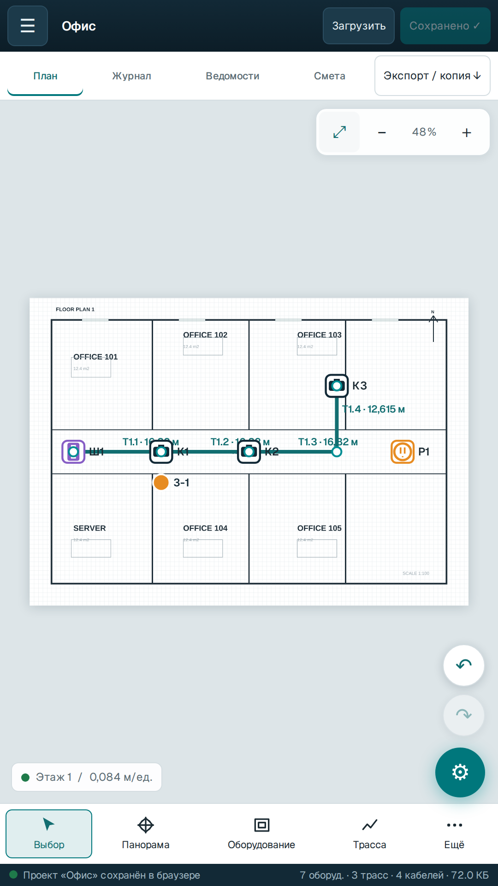
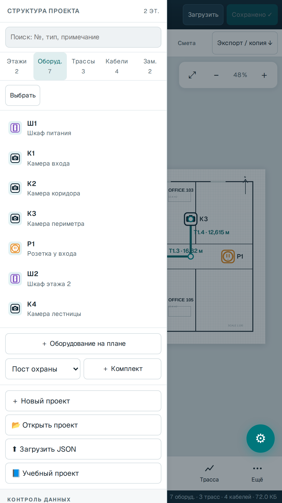
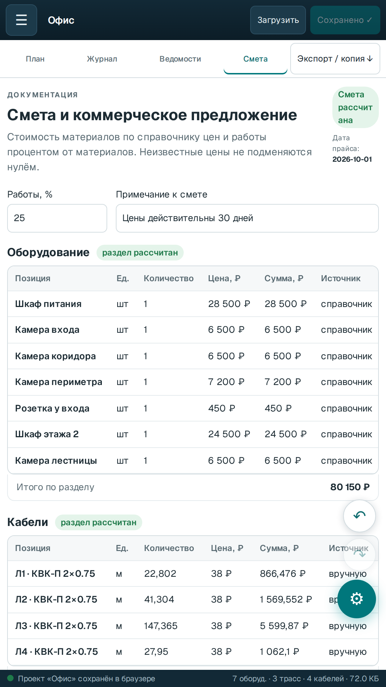
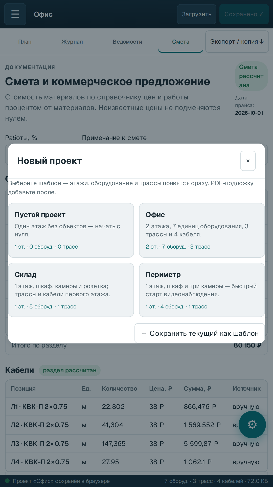

PDF-планы и этажи
Подложка, калибровка по двум точкам, масштаб листа A4–A0, несколько этажей и межэтажные стояки.
Android · офлайн · без рекламы
Загрузите PDF-план, расставьте оборудование, проведите трассы и получите кабельный журнал, ведомости и смету — прямо на объекте, без сети и облака.

Что внутри
Инструменты для проектировщика и монтажника: план, трассы, кабели, проверка и смета в одном приложении.
Подложка, калибровка по двум точкам, масштаб листа A4–A0, несколько этажей и межэтажные стояки.
Лоток, гофра, труба, кабель-канал; свои сечения на сегментах и расчёт заполнения по каждому участку.
Маршрут по графу трасс, запасы в процентах и метрах, концевые запасы и проверка заполнения.
Кабельный журнал, спецификация КНС, схема трасс и ведомость замечаний — с печатью и экспортом.
Материалы, работы и НДС по справочнику цен; цена и артикул КНС по сечению; коммерческое предложение.
Нет разрешения INTERNET, аналитики и аккаунтов. Проекты, PDF и фотографии остаются на устройстве.
Как это выглядит
Телефонная версия: план, список оборудования, смета и шаблоны проектов.



Три шага
1,6 МБ, подписанная release-сборка. Разрешите установку из браузера или файлового менеджера.
«Офис», «Склад» или «Периметр» — или начните с пустого проекта и загрузите свой PDF.
План, журнал, ведомости и смета — в PDF и XLSX. Всё считается на устройстве.
Android
Бесплатно, без рекламы и встроенных покупок. Версия 2.8.5, Android 7.0+, WebView 98+.